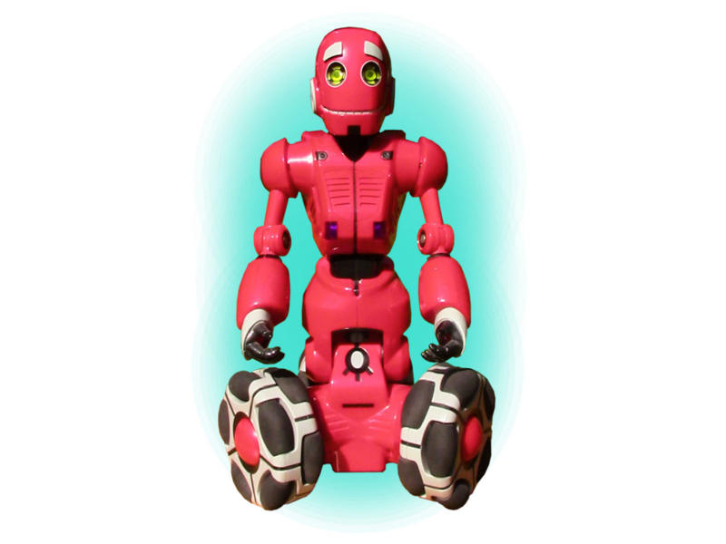

Tri-Bot

The WowWee Tri-Bot was released in 2008 and is no longer in production. Its omni-drive system allows it to move in all directions, and its built in speaker allows it to talk incessantly. Below is a link to all of its raw IR remote codes. The IR codes were recorded with an Arduino, but I have not tested them.